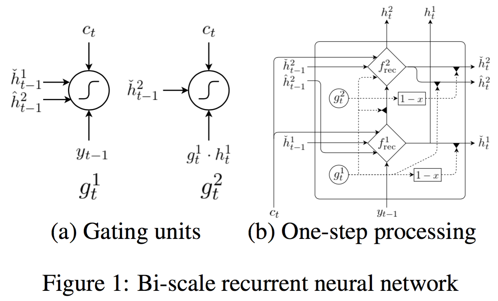
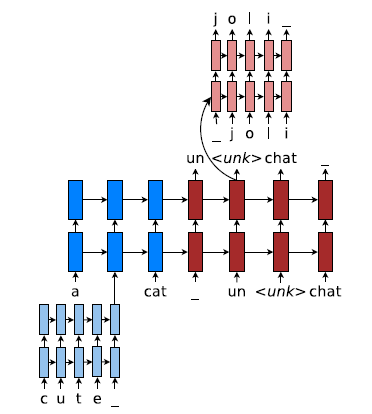
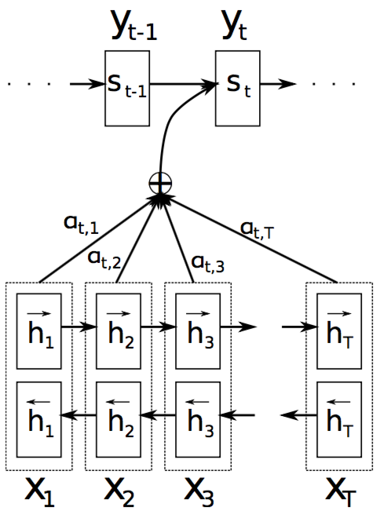
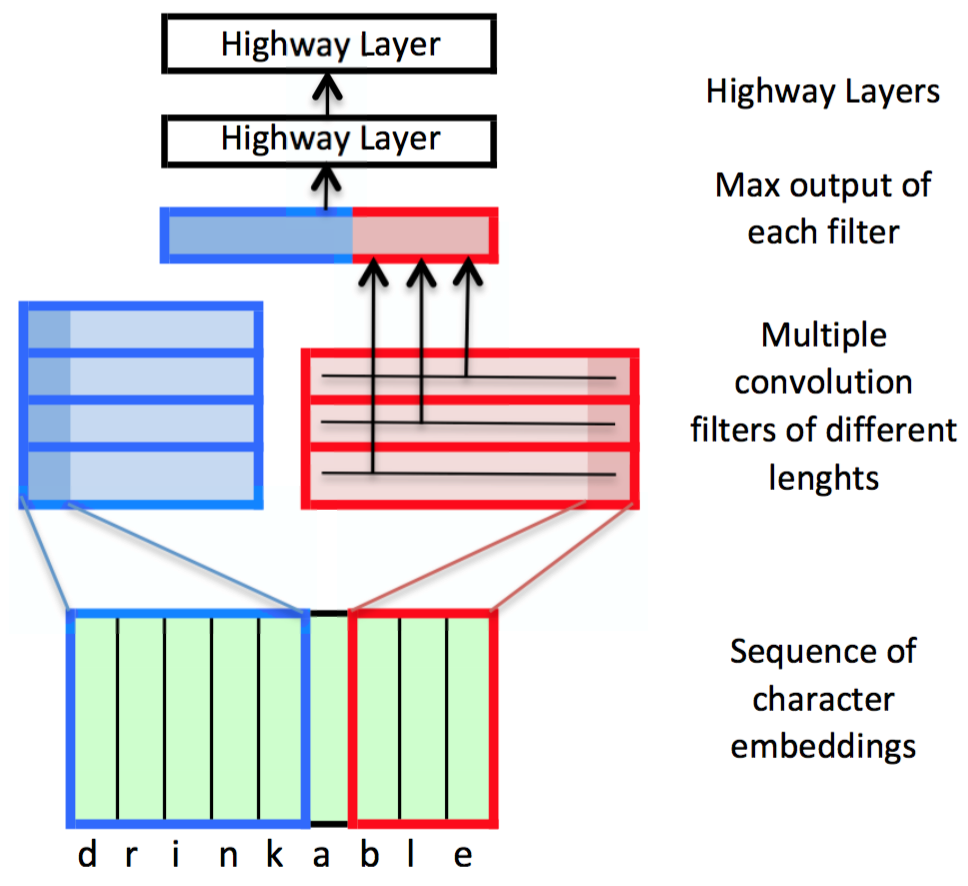
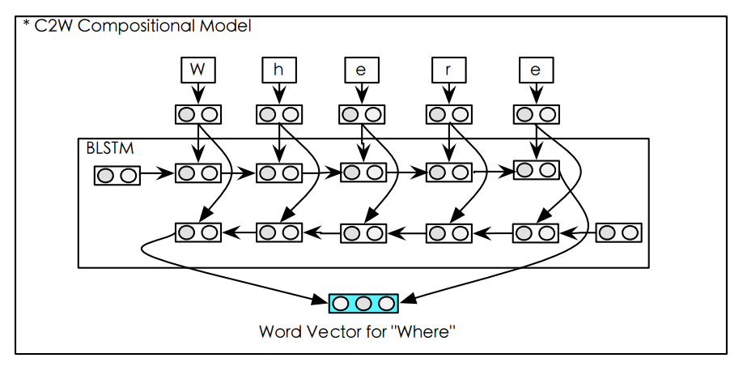
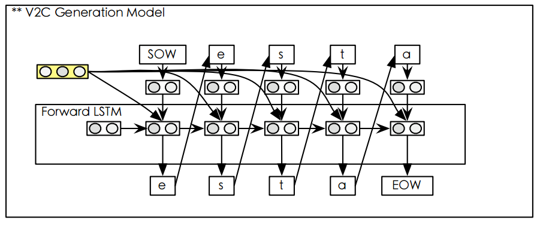
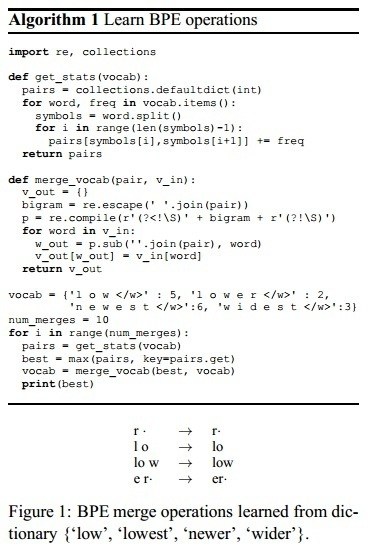

PaperWeekly 第七期
引言
神经网络机器翻译(NMT)是seq2seq模型的典型应用，从2014年提出开始，其性能就接近于传统的基于词组的机器翻译方法，随后，研究人员不断改进seq2seq模型，包括引入注意力模型、使用外部记忆机制、使用半监督学习和修改训练准则等方法，在短短2年时间内使得NMT的性能超过了传统的基于词组的机器翻译方法。在27号谷歌宣布推出谷歌神经网络机器翻译系统，实现了NMT的首个商业化部署，使得NMT真正从高校实验室走向了实际应用。本期Paperweekly的主题是神经网络机器翻译下的字符级方法，主要用来解决NMT中的out-of-vocabulary词问题，分别是：
- A Character-Level Decoder without Explicit Segmentation for Neural Machine Translation，2016
- Achieving Open Vocabulary Neural Machine Translation with Hybrid Word-Character Models，2016
- Character-based Neural Machine Translation，Costa-Jussa, 2016
- Character-based Neural Machine Translation，Ling, 2016
- Neural Machine Translation of Rare Words with Subword Units，2016
A Character-Level Decoder without Explicit Segmentation for Neural Machine Translation
作者
Junyoung Chung, Kyunghyun Cho, Yoshua Bengio
单位
Universite de Montreal
关键词
Segmentation, Character-level, Bi-scale recurrent network
文章来源
ACL 2016
问题
能否在不需要分词的前提下直接在字符级进行神经机器翻译。
模型
在讲模型之前，本文花了大量篇幅论证为何需要在不分词的前提下进行字符级翻译，首先作者总结了词级翻译的缺点。
词级翻译的缺点包括：
- 任何一个语言都没有完美的分词算法，完美的分词算法应该能够将任意句子划分为lexemes和morphemes组成的序列
- 导致的问题就是在词典中经常充斥着许多共享一个lexeme但有着不同morphology的词，比如run,runs,ran,running可能都存在于词典中，每个词都对应一个词向量，但是它们明显共享相同的lexeme——run
- 存在unknown word问题和rare word问题，rare word问题是指某些词典中词在训练集中出现次数过少，导致无法训练得到很好的词向量；unknown word问题是指不在词典中的词被标记为UNK（OOV词）
接着作者指出使用字符集翻译可以解决上述问题：
- 使用LSTM或GRU可以解决长时依赖问题
- 使用字符级建模可以避免许多词态变形词出现在词典中
然而上述字符级方法依然需要进行分词，然后对每个词的字符序列进行编码，因此引出了本文的motivation，即是否能直接在不分词的字符序列上进行翻译。
本文使用的模型同样是经典的seq2seq模型，其创新点主要在decoder端，引入了一种新的网络结构biscale RNN，来捕获字符和词两个timescale上的信息。具体来说，主要分为faster层和slower层，faster层的gated激活值取决于上一步的faster和slower层的激活值，faster层要想影响slower层，则必须要是faster层处理完当前数据，并且进行重置。换句话说，slower层无法接受faster层输入，直到faster层处理完其数据，因此比faster层要慢，而这样的层次结构也对应字符和词在timescale上的关系。下图为网络结构示意图。

在4种语言翻译任务上的实验显示完全可以在不分词的情况下进行字符级翻译，性能优于state-of-the-art的非神经翻译系统
相关工作
Sennrich ACL2016提出使用BPE算法对subword建模。Kim AAAI2016中提出直接对字符进行encode，Costa-jussa ICLR2016中将该模型用在了NMT任务中。Ling ICLR2016的工作中使用Bi-RNN来编码字符序列。以上工作基于字符级展开，但它们都依赖于知道如何将字符分为词，即分词。本文研究能否在不分词的情况下进行字符级翻译。
简评
本文是Bengio组工作，Bi-scale RNN受启发于该组之前提出的GF-RNN，本文创新点主要是提出了一种新的RNN结构，可以在字符和词两个timescales上进行处理，输出字符序列不需要进行分词。不足是未考虑encoder端是否也可以直接使用未分词的字符序列，而是仅仅使用了分词后的BPE序列。
Achieving Open Vocabulary Neural Machine Translation with Hybrid Word-Character Models
作者
Minh-Thang Luong and Christopher D. Manning
单位
Stanford University
关键词
OOV, hybrid word-character models, NMT
文章来源
ACL 2016
问题
机器翻译里面的OOV问题, 如何处理UNK
模型
提出了一种混合word-character的NMT模型.在训练难度和复杂度不是很高的情况下,同时解决源语言和目标语言的OOV问题.

这个图表达了模型的整体思路. 大多数情况下,模型在word-level进行translation. 当出现unk的时候,则会启用character-level的模型. 对source unk, 由character-level模型来得到它的representation; 对target unk, 用character-level模型来产生word.
- 整体上采用他们组以前提出的基于global attention的encoder-decoder模型. RNN采用的是deep LSTM.
- 源语言端和目标语言端的character-level模型都是基于character的deep LSTM. 对源语言端来说, 它的character-level模型是context independent的. 隐层状态全部初始化为0, 因此在训练时可以预先计算mini-batch里的每一个rare word的representation. 而对于目标语言端来说, 它的character-level模型是context dependent的.它的第一层的hidden state要根据当前context来初始化, 其它部分都初始化为0.训练时, 在目标语言的decoder阶段, 首先用word-level的decoder产生句子, 这时句子里包含了一些unk. 接着对这些unk, 用character-level模型以batch mode来产生rare word.
- 对于目标语言端character-level模型的初始化问题, 作者提出了两种方法来表示当前的context. 一种叫做same-path, 用预测
的softmax层之前的ht来表达. 但是因为ht是用来预测 的, 所以所有ht的值都会比较相似,这样很难用来产生不同的目标rare word. 因此作者提出了第二种表达叫做separate-path, 用ht’来表达context. ht’不用预测unk, 是专门作为context在character-level的输入的. 它的计算方法和ht’相同,只是用了一个不一样的矩阵. - 模型训练的目标函数是cross-entropy loss, 同时考虑了word level和character level的loss.
相关工作
NMT的模型分为word-level和character-level的. 对于word-level模型,要解决OOV问题, 之前的工作提出了unk replacement(Luong et al. 2015b), 使用大字典并在softmax时进行采样(Jean et al. 2015), 对unk进行Huffman编码(Chitnis et al. 2015)等方法. 而对于character-level的模型, 本身可以处理OOV词, 但是训练难度和复杂度会增加.
简评
本文的创新之处在于提出了混合word-character model的NMT模型. 这个混合模型结合了二者的优点, 在保证模型复杂度较低的同时,实现了很好的效果.因为加入了character, 特别适合单词有丰富变形的语言.
Character-based Neural Machine Translation
作者
Marta R. Costa-jussa and Jose A. R. Fonollosa
单位
TALP Research Center
Universitat Politecnica de Catalunya, Barcelona
关键词
NMT，character-based word embeddings，CNN
文章来源
ICLR2016
问题
本文提出使用character-based word embeddings的NMT，可以在一定程度上克服机器翻译中OOV问题。
模型

如上图所示，这篇论文使用的基本模型架构是一个带attention机制的seq2seq的encoder-decoder的架构，使用的神经网络单元是GRU。encoder把源句子转化成一个向量（双向），使用attention的机制来捕获context信息，decoder把context解码成目标句子。网络的输入仍然使用word embedding，但是作者在获取word embedding的时候使用的方法不同。本文是基于词中的character来生成word embedding的，具体方法如下图所示。

上图中，最底层是一个character-based embedding组成的序列，对应的是每个词中的字母。然后这个序列被送入一个由不同长度的一维卷积过滤器组成的集合中进行处理，不同的长度对应单词中不同数量的字母（从1到7）。对于每个卷积过滤器，只取最大的值作为输出。然后把每个卷积过滤器输出的最大值连接起来组成一个向量。最后这个向量再通过两层Highway layer的处理作为最终的word embeddings。这个方法的详细信息可以参考Kim的论文Character-Aware Neural Language Models(2016)。
资源
- 本文数据集[German-English WMT data] (http://www.statmt.org/wmt15/translation-task.html)
- 建立对比模型使用的软件包DL4MT
相关工作
（1）2003年，基于短语的统计机器翻译模型。Statistical Phrase-Based Translation
（2）2013年，基于神经网络的机器翻译模型。Recurrent continuous translation models
（3）2014年，seq2seq的神经网络模型用于机器翻译。Sequence to sequence learning with neural networks
简评
本文作者将基于character来产生word embedding的方法应用于机器翻译，可以在一定程度上克服OOV的问题。同时，由于利用了单词内部的信息，这篇论文提出的方法对于词形变化丰富的语言的翻译也产生了更好的效果。但是，作者只是在source side使用了上述方法，对于target side，仍然面临词典大小的限制。
CHARACTER-BASED NEURAL MACHINE TRANSLATION
作者:
Wang Ling, Isabel Trancoso, Chris Dyer, Alan W Black
单位
- LF Spoken Systems Lab,Instituto Superior Tecnico Lisbon, Portugal
- Language Technologies Institute, Carnegie Mellon University Pittsburga, PA 15213, USA
关键词
NMT, Character-Based
文章来源
ICLR 2016
问题
尝试在字符级别上应用神经机器学习方法
模型
在带注意力机制的神经机器学习模型的前后端增加字符到词（C2W)和词向量到字符（V2C）的模块。

图中，小矩形是一个双向LSTM，双向LSTM的前向和后向的最终状态以及bias之和为词的向量表示。

这个模块主要由三个步骤组成：
- 将字符转换为向量表示。
- 将字符向量和之前模型产生注意力向量的a和目标词在前向LSTM中产生的向量表示做拼接并输入到LSTM。
- 将得到的向量输入到softmax层得到结果。
相关工作
- Neural machine translation by jointly learning to align and translate.
简评
这篇文章在基于注意力机制的机器翻译模型上增加了两个模块。由于是基于字符集别的模型，该模型自然可以学得一些语言中的前后缀在翻译中的关系。此外，基于字符级别的模型在翻译未知词时有灵活性。可是，文中也提到，该模型为能够准确的翻译未知词。并且该文也没有明确表明该模型和其他模型相比具有哪些明显的优势。从实际上来说，该模型在V2C部分的训练速度慢是一个很大的弱点，因此若仅根据文章的表述，该模型的实际应用价值应该有限。
Neural Machine Translation of Rare Words with Subword Units
作者
Rico Sennrich and Barry Haddow and Alexandra Birch
单位
School of Informatics, University of Edinburgh
关键词
NMT;Rare Words;Subword Units;BPE
文章来源
ACL 2016
问题
NMT中的OOV（集外词）和罕见词（Rare Words）问题通常用back-off 词典的方式来解决，本文尝试用一种更简单有效的方式（Subword Units）来表示开放词表。
模型
本文从命名实体、同根词、外来语、组合词（罕见词有相当大比例是上述几种）的翻译策略中得到启发，认为把这些罕见词拆分为“子词单元”(subword units)的组合，可以有效的缓解NMT的OOV和罕见词翻译的问题。
子词单元的拆分策略，则是借鉴了一种数据压缩算法：Byte Pair Encoding(BPE)(Gage,1994)算法。该算法的操作过程和示例如Figure1所示。

不同于(Chitnis and DeNero,2015)提出的霍夫曼编码，这里的压缩算法不是针对于词做变长编码，而是对于子词来操作。这样，即使是训练语料里未见过的新词，也可以通过子词的拼接来生成翻译。
本文还探讨了BPE的两种编码方式：一种是源语言词汇和目标语言词汇分别编码，另一种是双语词汇联合编码。前者的优势是让词表和文本的表示更紧凑，后者则可以尽可能保证原文和译文的子词切分方式统一。从实验结果来看，在音译或简单复制较多的情形下（比如英德）翻译，联合编码的效果更佳。
实验结果分别在WMT15英德和英俄的任务上得到1.1和1.3个BLEU值的提升。
资源
本文提出的子词拆分算法代码在 https://github.com/rsennrich/subword-nmt
实验所用的NMT系统为Groundhog: github.com/sebastien-j/LV_groundhog
实验数据来自WMT 2015
相关工作
OOV的处理一直是机器翻译研究的重点。
基于字符的翻译在短语SMT模型中就已被提出，并在紧密相关的语种对上验证是成功的(Vilar et al., 2007; Tiedemann,2009; Neubig et al., 2012)。 此外还有各种形态素切分方法应用于短语模型，(Nießen and Ney,2000; Koehn and Knight, 2003; Virpioja et al.,2007; Stallard et al., 2012)。
对于NMT，也有很多基于字符或形态素的方法用于生成定长连续词向量(Luong et al., 2013; Botha and Blunsom, 2014; Ling et al., 2015a; Kim et al., 2015)。与本文类似的一项工作 (Ling et al., 2015b)发现在基于词的方法上没有明显提升。其与本文的一个区别在于，attention机制仍然在词层级进行操作，而本文在子词层级上。
简评
这篇文章的创新点在于提出了一种介乎字符和单词之间，也不同于字符n-gram的文本表示单元，并借鉴BPE压缩算法，在词表大小和文本长度两个方面取得一个较为平衡的状态。应用在非同源/近源的语言对（如英汉）是否可以有类似的效果，尚待研究。在NMT模型的优化上，也还有探讨的空间。
本文的实验评价方法值得学习，单看BLEU值并不觉得有惊艳之处，但加上CHR F3和(对所有词、罕见词和集外词分别统计的)unigram F1这两个评价指标，尤其是Figure2和3画出来的效果，还是让人比较信服的。
总结
OOV词对于翻译性能和实用性的影响非常巨大，如何处理OOV词并达到open vocabulary一直是NMT的主要研究方向。传统方法基于单词级别来处理该问题，比如使用UNK替换、扩大词典规模等方法，往往治标不治本。因此最近一些研究者提出基于字符的NMT模型，取得了不错的成绩，字符级方法的主要优势包括不受语言的形态变化、能预测出词典中未出现的单词并降低词典大小等。值得一提的是，基于字符的模型不仅局限于NMT上，任何生成模型都面临OOV词问题，因此是否能够将字符级方法用在其他NLP任务，比如阅读理解或文本摘要上，让我们拭目以待。
以上为本期Paperweekly的主要内容，感谢EdwardHux、Mygod9、Jaylee1992、Susie和AllenCai五位同学的整理。
广告时间
PaperWeekly是一个分享知识和交流学问的民间组织，关注的领域是NLP的各个方向。如果你也经常读paper，也喜欢分享知识，也喜欢和大家一起讨论和学习的话，请速速来加入我们吧。
微信公众号：PaperWeekly
微博账号：PaperWeekly（http://weibo.com/u/2678093863 ）
知乎专栏：PaperWeekly（https://zhuanlan.zhihu.com/paperweekly ）
微信交流群：微信+ zhangjun168305（请备注：加群 or 加入paperweekly）